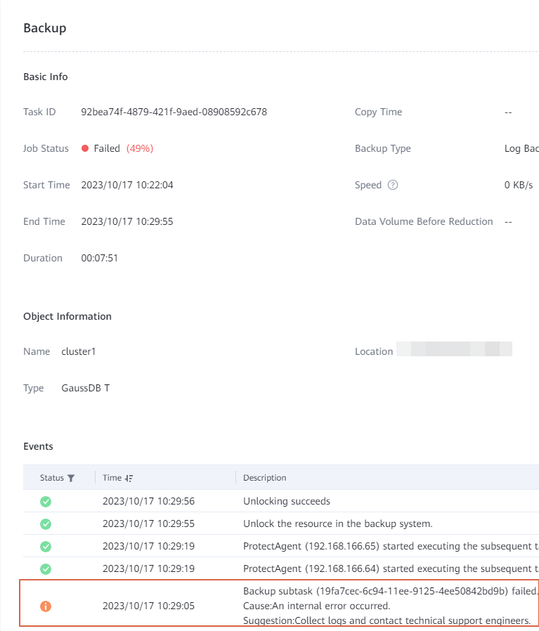
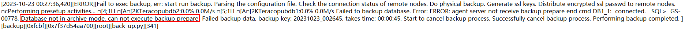

A GaussDB T backup job fails, and a message indicating an internal error is displayed in the job details area on the OceanProtect WebUI. Obtain the gaussdbt_plugin.log log files of all nodes from the host where the client is installed and the error is reported, and query the error information in logs. The following figure shows an example of the log information.

The GaussDB T database is not running in ARCHIVELOG mode. As a result, the database status is degraded and the backup fails.
Set the redo log mode to ARCHIVELOG. For details, see Step 2: Setting the Redo Log Mode.